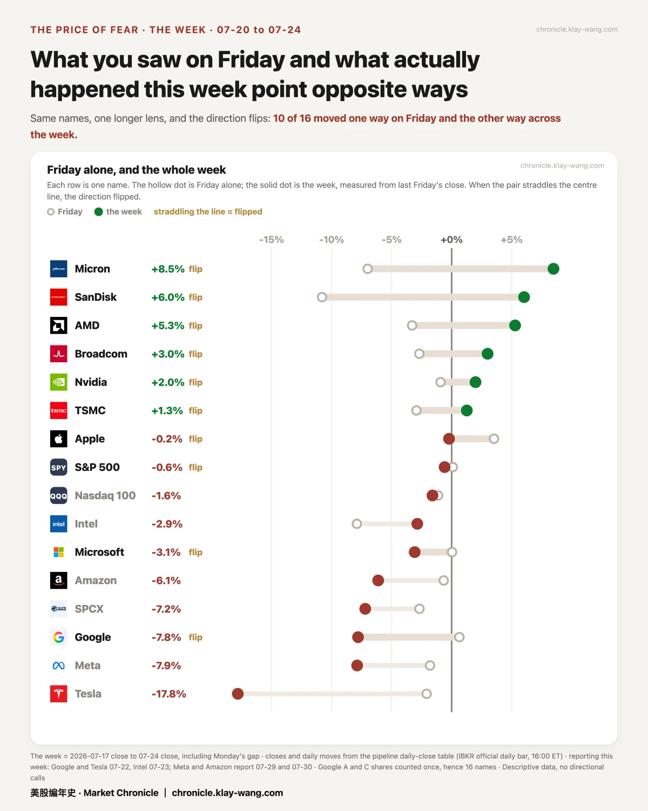

美股跌到位了吗？· 7.20-7.24 本周回顾
• 跌到位了吗：我不猜。但市场这周出了这么大的事故，明年的保费却只动了 1.9%：卖保险的人，没把这周当变天
• 本周对账：发过的判断开奖 7 条，对 3 错 2。两个错是同一个错：低估了财报第二天的跌幅
• 下周两颗雷同一晚：美联储决议撞上 Meta 财报。市场给 Meta 的围栏 ±8.01%，苹果的两倍宽
📒 本周回顾：哪些对了，哪些错了
一句话：发过的判断，对了回来对，错了也回来认。
先说错的。
周三那封《财报开牌前，聪明钱在买翅膀》里，我们押了两条：谷歌财报之夜会比特斯拉动得大；两只都不会冲出市场赛前划好的波动带。
第一条，错。实际是特斯拉动得大。
第二条，财报当晚看起来对了：两只都乖乖待在带内。但第二天，特斯拉 −14.5%，谷歌 −7.1%，到周五收盘双双跌穿带子下沿（谷歌收 319.74，带下沿 329.17；特斯拉收 313.03，下沿 359.85）。也错。
两个错其实是同一个错：财报的账单，是第二天才付的。我们把当晚的带子，当成了整段行情的围栏。
再说对的。三条，全是同一类。
英伟达那笔约 3 亿美元的大单：我们周三当天判断是老仓搬家、不是新赌注（判断台账 07-22 当天立案，先写判断，后看开奖），并且把第二天该看到的两个数字提前写下来：旧仓应减约 8 万张，新仓应增约 8.8 万张。第二天开奖：−78471 和 +88009。两个数都对上了。
三巨头同一天各冒出 1.1 万张的五条腿：我们判断是同一家机构的程序单。第二天五条腿的持仓齐刷刷各增约 1.1 万张。
财报周被炒到天价的短期期权，开盘后必然大幅泄气：最狠的一只，一夜从 100 上下泄到 41。
本周回顾：猜价格往哪走，0 对 2；看懂这笔钱在干什么，3 对 3。我们不猜牌，我们看筹码。

🙋 问得最多的两个问题
一句话：我不预测价格，但钱的每个动作都记了账。
跌到位了吗？
不知道，也不猜。但这一周有三笔钱的动作，值得你知道。
第一笔：保险没涨价。 你的车要是出了事故，第二年续保，保费多半要涨：保险公司认定这条路以后还会出事，才敢多收钱。这一周市场天天挨打，短期的怕上蹿下跳，来回跑了 12.4%；可给未来一年买保护的价钱，全周只动了 1.9%。出了事故，保费却没涨。 卖保险的是全市场最会算账的一批人：他们没提价，意思是在他们的账本上，这一周是一场事故，不是路况变了。你纠结割肉还是加仓的那一刻，这个数不告诉你该怎么做；它只告诉你：天天跟恐惧做买卖的那批人，这周没改价。
第二笔：有人押会动，不押方向。 有人在 8 月底到期的合约上花了五六百万美元，同时买涨和买跌，两边距离现价对称。这笔单 99% 留仓过夜，是真仓；到期日正好罩住下周的美联储会议和整个财报季。
第三笔：极端的险有人上。 周一有人花一万二美元，买了 3000 张 SPY 跌 86% 才赔的保险，4 美分一张。第二天几乎全部留仓。
三笔连起来读：主流的钱没在慌，会动的钱在加价，极端的险一直有人买。 这不是预测，是记账。
存储还跌吗？
先把一个反直觉的事实放正：周五被血洗的存储，其实是本周最强的板块。 美光这一周 +8.5%（周五 −7%），闪迪 +6%（周五 −10.8%）。周五吐回去的，少于这一周涨出来的。
然后看钱怎么动的：
• 周三收盘前最后半小时，有人花约 1 亿美元买了美光的看涨，这笔单赚钱的门槛是月底站上 996。周五美光收 920.95，低于那道门槛 75 美元。下周五开奖，赢输我们都晒。
• 周五大跌当天收盘前，又有人花 960 万美元，买美光回到 1000 的票。跌下来的当天，就有钱进场赌反弹。
• 但想上车的先看票价：买它们期权的成本，闪迪排在过去一年的 96 分、美光 88 分（100 分就是这一年最贵那天）。便宜的是股票，不是上车的成本。
• 长期的票价没慌：闪迪一年多之后到期的期权价格，一周从 118 降到 114，还在轻微降温。
钱的表态翻译成一句：短线在对赌，长线没改主意，入场费仍在最贵档。

🗓 下周看点：钱已经表态的两场
一句话：我不猜结果，只报市场已经付钱买下的预期。
第一场：Meta 财报，周三盘后，同一晚撞上美联储决议。一晚两颗雷。
钱的表态：市场给它划的围栏 ±8.01%（558 到 655 美元），四家巨头里最宽，是苹果（±3.9%）的两倍。翻译：市场为 Meta 准备了全场最大的意外空间。微软同晚开牌，围栏 ±6.62%。
周四苹果、亚马逊接棒。亚马逊的账本歪着：押它涨的持仓是押跌的 3.4 倍。每张合约都有买方和卖方，这个倍数不代表谁会赢，只代表如果结果朝反方向走，被打脸的人多得多。
第二场：存储的两次终审。
周五 07-31：美光那张 1 亿美元大单开奖，996 见分晓。
08-05：闪迪财报。到时候它 96 分的票价，就要接受检验。
我们的挂账（美光 07-31、诺基亚 08-28）到期都会回来对，赢输都晒。

这封信不告诉你该怎么做。它只保证一件事：我们说过的每句话，都会回来对账。
本站不提供投资建议，不预测方向，不做择时。